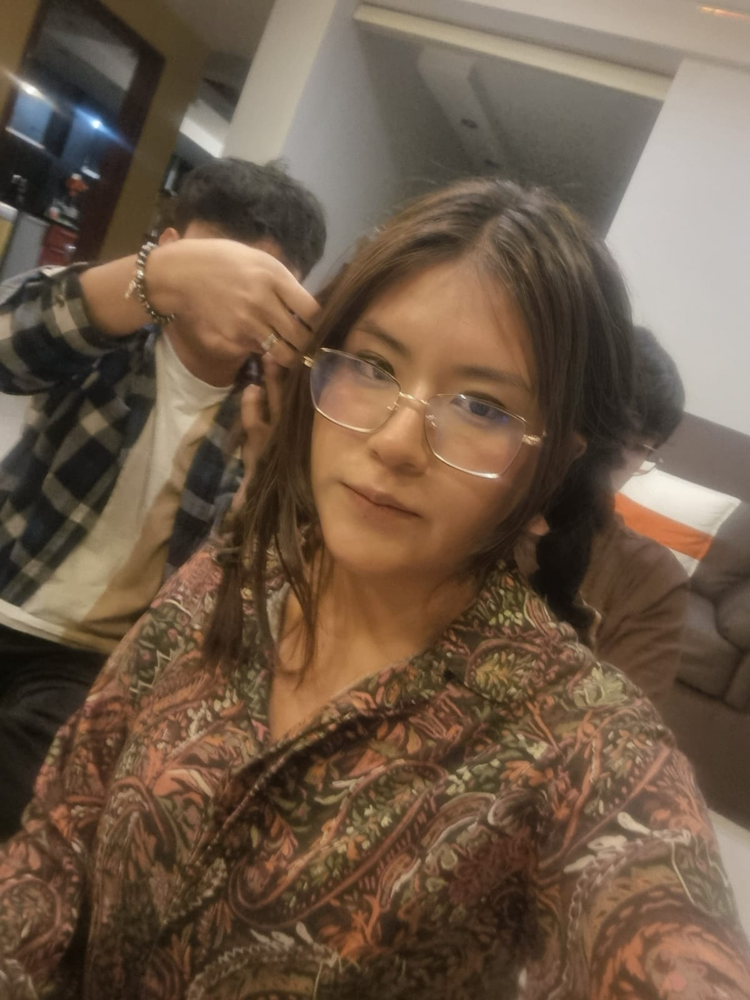

🎉 ¡Feliz cumpleaños, Ana! 🎉

De parte de Niko y Gonza — los que siempre llegan temprano
Perdón por saludarte tarde, estuvimos hasta el cuello con la uni y un drama que haría llorar a cualquiera.
Ana Banana, te deseamos unos felices tueniuan.
Te mandamos un abrazo gigantesco (y algo de culpa por la demora).
Nos vemos cuando vuelvas — y esta vez prometemos cortarte bien el cabello.